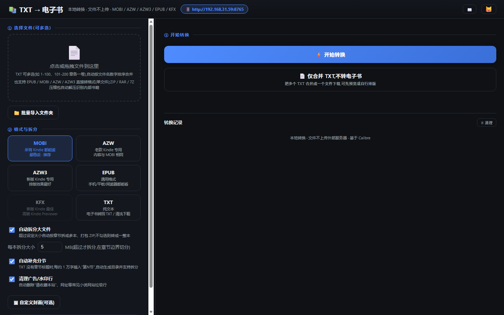
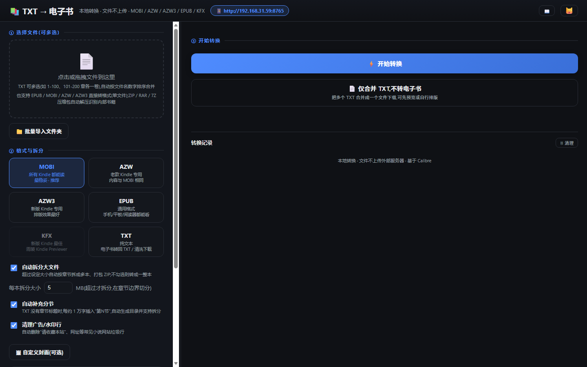
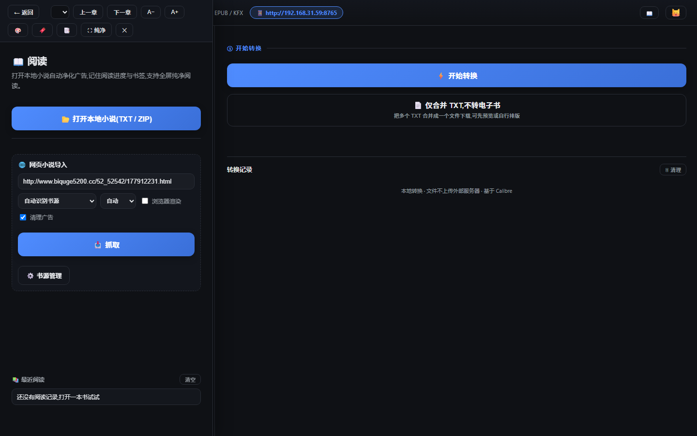
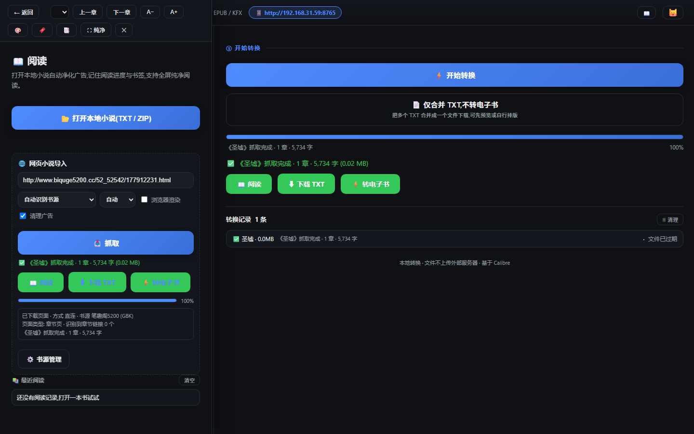
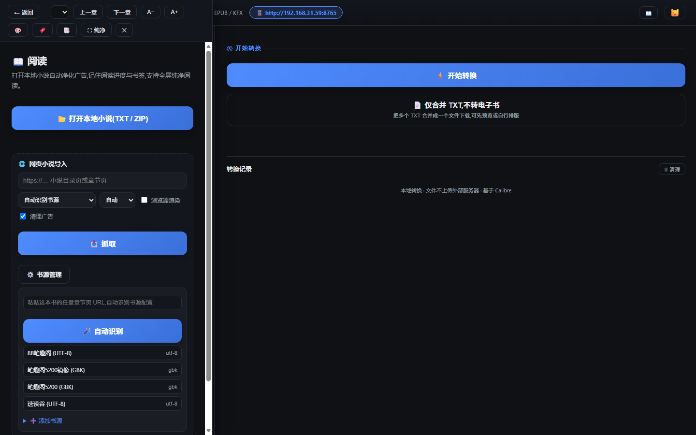
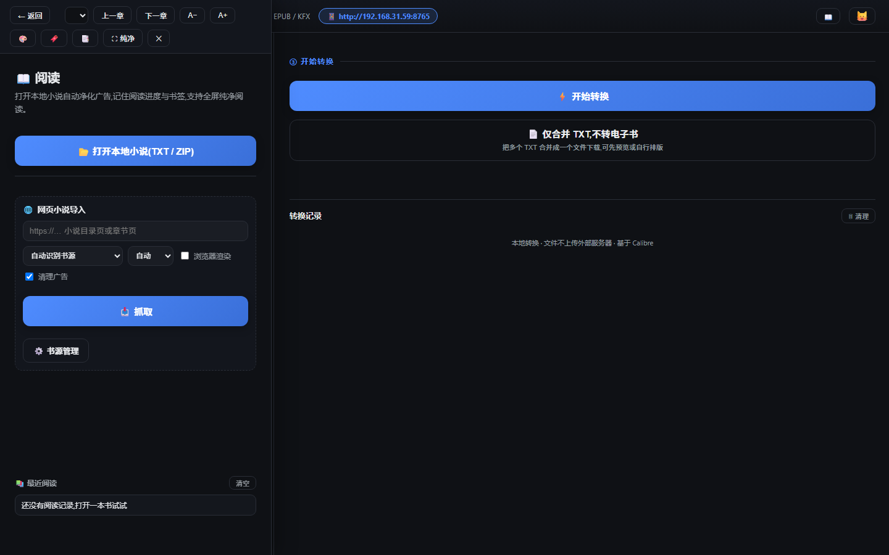
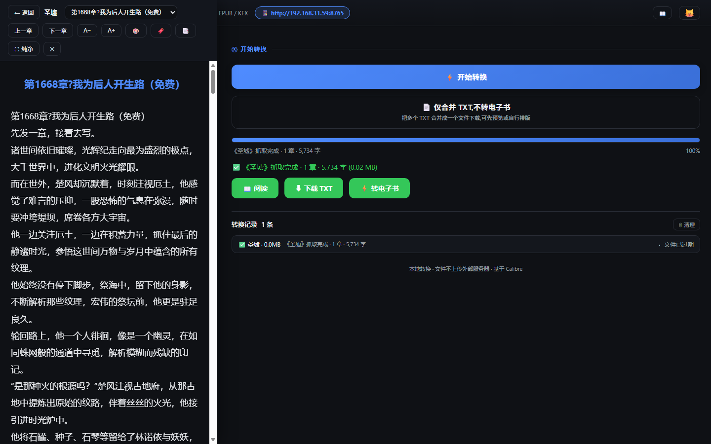
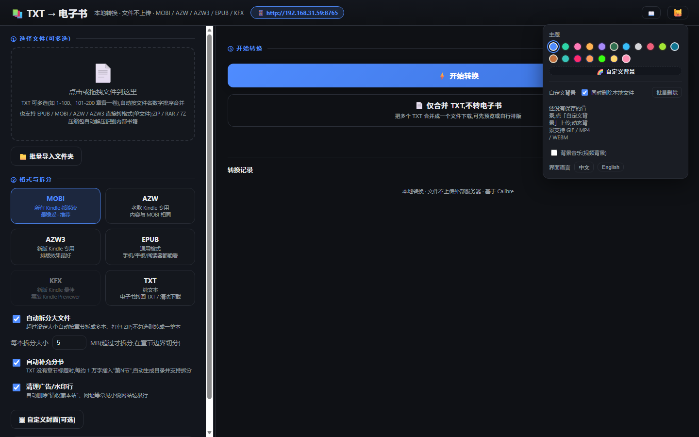

📚 txt2ebook 使用教程
本地 TXT → 电子书转换 + 网页小说抓取。所有文件都在本机处理,不上传任何外部服务器。
① 打开与访问
- 双击
start.bat 启动(首次自动安装 Python 和 Calibre,需联网)
- 电脑浏览器打开
http://127.0.0.1:8765
- 手机访问:顶栏 🐱 主题面板 → 高级设置 → 勾选「允许手机/平板访问」→ 重启服务 → 顶栏显示手机地址(形如 http://192.168.x.x:8765),点击复制
⚠️ 注意:服务默认仅本机可访问(隐私);开启手机访问后,同一 WiFi 下的设备都能打开页面(无登录,请勿在公共网络开启)。手机地址是 DHCP 分配的,重启路由可能变化。
② 转换 TXT 为电子书(主页)

- 点击或拖拽 TXT 文件到左侧「① 选择文件」(支持多选,自动按文件名数字排序合并)
- 选格式:MOBI(所有 Kindle)/ AZW / AZW3 / EPUB / KFX / TXT
- 按需调整:自动拆分、自动分节、清理广告
- 右侧预览确认书名/作者/字数/章节数,可手动修改书名作者
- 点「⚡ 开始转换」,完成后在下方「转换记录」点下载
图:主页(上传、格式、预览、转换)
💡 提示:
- 大文件(>5MB)自动按章节拆成多本打包 ZIP,避免 Kindle 卡顿
- 无章节标题的 txt 会自动插入「第N节」生成目录
- 「仅合并 TXT」= 多卷合并成一个 txt 下载,不转电子书
- 支持上传 EPUB/MOBI/AZW/AZW3 直接转格式;ZIP/RAR/7Z 压缩包自动解压
③ 高级设置

- 输出目录:默认程序目录下 output/,可改到其他盘
- 章节规则:自定义章节正则(留空=自动识别)
- 文件保留:成品文件保留时长(默认 6 小时,可设 1 小时~30 天)
- 完成提醒:转换完成提示音+系统通知
- 允许手机/平板访问:LAN 开关(需重启生效)
④ 网页小说导入(抓取)
点顶栏 📖 打开阅读器 → 「🌐 网页小说导入」区:

- 粘贴小说目录页或章节页 URL(任意网站都行)
- 书源默认「自动识别」;模式选「自动」(章节页/目录页自动判断)
- 勾选「清理广告」;JS 动态加载的网站可勾选「浏览器渲染」(或让它自动检测)
- 点「📥 抓取」→ 实时进度/日志 → 可随时取消

图:抓取完成,提供 阅读 / 下载 TXT / 转电子书
💡 说明:
- 目录分页自动翻全(几百上千章);章节多页自动合并完整
- JS 动态加载站 / 加密正文站自动用浏览器渲染(需 Chrome/Edge,或运行 install_render.bat)
- 「⚡ 转电子书」= 把抓取结果直接走转换流程(选格式后在主页看进度)
⚠️ 抓不到的情况:需要登录的站(番茄/起点)、字体反爬、图片章节——会明确报错,不会产出脏数据。仅供自用。
⑤ 书源管理(可选)

- 网页导入区底部「⚙️ 书源管理」
- 🪄 自动识别:粘贴本书任意章节页 URL → 自动检测编码/正文容器/分页 → 配置自动填好
- 点「保存书源」→ 立即生效(下次抓这个站自动用专用规则)
- 内置 4 个书源(5200/镜像/88笔趣阁/速读谷),自定义的可删除
💡 其实不配书源也能抓(通用模式自动识别容器/分页/编码),书源只是让规则更精准。搞不定的站才需要配。
⑥ 阅读器

- 打开本地小说:TXT / ZIP,自动净化广告、按章分页
- 网页抓取:见上节(抓完可直接读)
- 最近阅读:续读 / 书签 / 删除 / 清空

图:阅读界面(章节跳转/字号/主题/书签/纯净模式)
- ← → 键翻章;A−/A+ 调字号;🔖 加书签;⛶ 纯净全屏
- 进度自动记忆,重开自动续读
⑦ 主题与背景

- 顶栏 🐱 展开:18 套预设配色一键切换
- 「🌈 自定义背景」上传图片/视频,自动按图片取色生成整套配色
- 底部可切换 中文 / English
⑧ 转换记录
- 主页下方「转换记录」:显示全部任务(转换+抓取),可下载/取消/清理
- 完成的任务文件保留 6 小时(可调),过期自动清理
- 「🗑 清理」:仅清记录(保留文件)或记录+文件一并删除
⑨ 安装 / 升级 / 卸载
- 安装:双击 start.bat(自动装 Python+Calibre);可选 install_render.bat 装渲染组件
- 升级:覆盖安装——用新版 server.py + sources/ 替换旧目录文件(保留 library/output/config),再双击 start.bat
- 卸载:uninstall.bat,可勾选删除数据/Playwright/Calibre/Python
⑩ 注意事项汇总
- 仅供自用:工具不内置推广、不做商业用途;抓取内容请自行确认版权合规
- 抓书别太频繁:站点会临时限流(504),工具已自动重试退避;整本上千章需 30 分钟~2 小时属正常
- 88笔趣阁的章节内容被站点截断(反盗版),每章只有前半;抓书优先用 5200 / 速读谷
- 番茄、起点等需登录/付费的站抓不了,这是边界(不做破解)
- 转换时服务内存占用与文件大小相关,超大合集(数百 MB)建议拆分后转
- 开启手机访问后无登录保护,别在公共 WiFi 开启;服务文件全在本机,断网也能转换
- 遇到问题先看「转换记录」里的错误详情;抓取问题看抓取日志
txt2ebook · 本地转换 · 文件不上传 · 基于 Calibre